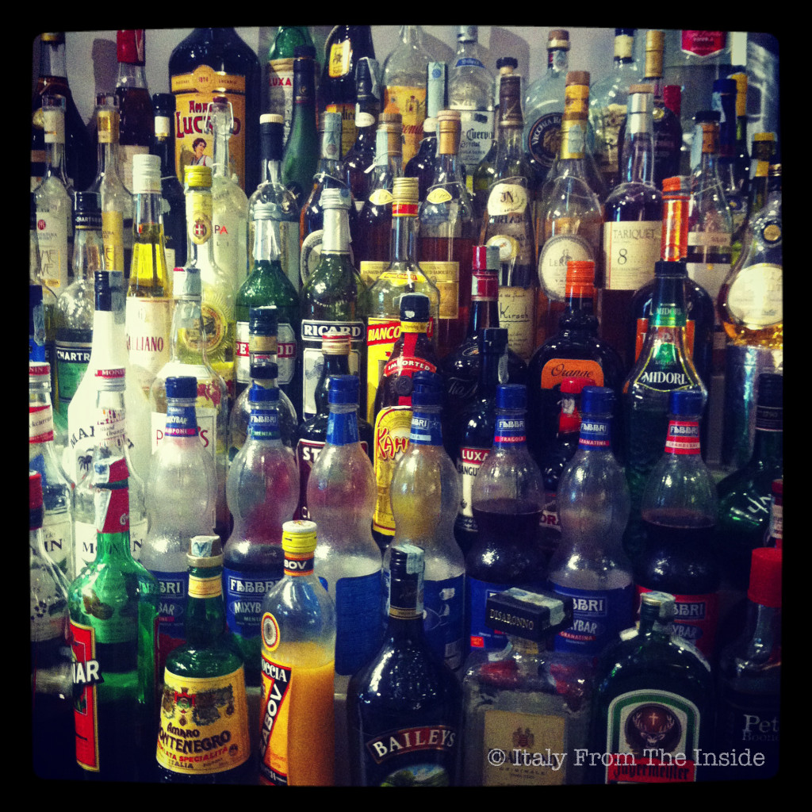

What we call "coffee house" in the States is known as "bar" in Italy. Or at least it's something like that, because any establishment that offers coffee, offers liquors as well. As a matter of fact some people like to add a shot of liquor to their espresso, especially after a good meal.